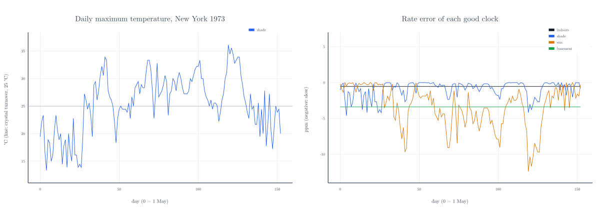
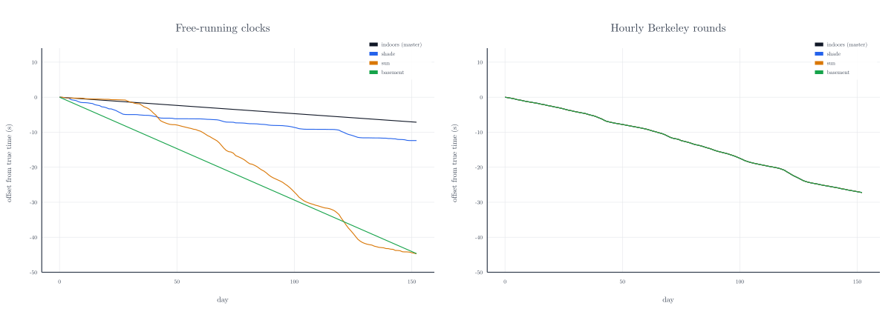
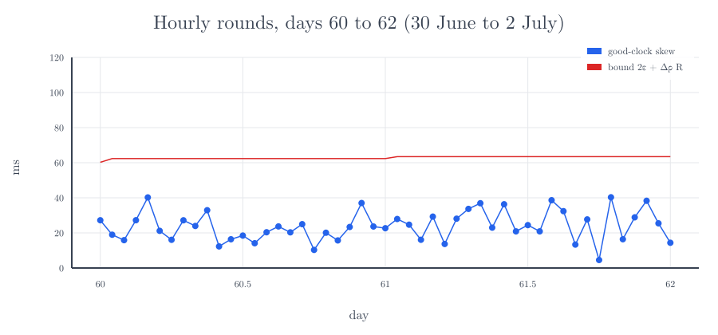

The Berkeley Algorithm
Abstract
The Berkeley algorithm keeps a group of computer clocks close to one another
without any reference clock. A master polls every clock, averages the readings
that agree within a window, and tells each clock how far it is from that
average. We derive Cristian's bound on the reading error, the skew bound
\(2\varepsilon+\Delta\rho R\) between rounds, and the conditions a
fault-tolerant window must meet. We test them on a simulated sensor network
whose quartz clocks drift with the daily temperatures in
dm::datasets::airquality(), New York in the summer of 1973, plus one broken
clock. Hourly rounds keep the good clocks within 61 ms of each other, inside the
91 ms bound, and reject the broken clock every round. The group as a whole still
loses 27 s against true time, the mean of its clocks' errors. With 15-minute
rounds the broken clock never gets far enough ahead to be noticed, and it drags
the whole network 375 s fast.
Clocks that drift
A computer clock counts the oscillations of a quartz crystal. The crystal's frequency is never exactly right, so the clock gains or loses time at a rate error \(\rho\), measured in parts per million (ppm). One ppm is 86 ms a day. The cheap 32.768 kHz tuning-fork crystals in watches and sensor boards are cut to be exact at a turnover temperature \(T_0\approx25\,^\circ\)C. Away from it they always run slow, following the parabolic law
so a clock at 5 °C loses 13.6 ppm, more than a second a day.
algorithms::crystal_drift_ppm implements this law. Clocks in different places
therefore drift apart. A distributed system can ask for external
synchronization (every clock close to true time, which needs a reference such as
GPS or an atomic clock) or internal synchronization (every clock close to
every other, whatever the true time). The Berkeley algorithm (Gusella and
Zatti 1989) provides internal synchronization without any reference clock.
Weather as a clock error
dm::datasets::airquality() holds daily readings in New York from 1 May to 30
September 1973, including the maximum temperature in °F. We use it to drive a
small network of five sensor clocks with tuning-fork crystals:
| node | where | temperature |
|---|---|---|
| 0 (master) | indoors | 21 °C |
| 1 | outdoors in the shade | the day's temperature |
| 2 | outdoors in the sun | the day's temperature + 8 °C |
| 3 | in a basement | 15 °C |
| 4 | broken | runs 150 ppm fast |
#include <dm/dm.hpp>
namespace alg = dm::algorithms;
int main() {
std::filesystem::create_directories("build");
const auto air = dm::datasets::airquality();
const auto &fahrenheit = air.get_column("Temp").values();
std::vector<double> day, outdoor;
for (std::size_t d = 0; d < fahrenheit.size(); ++d) {
day.push_back(static_cast<double>(d));
outdoor.push_back((fahrenheit[d] - 32.0) * 5.0 / 9.0);
}
const std::vector<std::string> names = {"indoors", "shade", "sun",
"basement"};
std::vector<std::vector<double>> drift(4);
for (const double t : outdoor) {
drift[0].push_back(alg::crystal_drift_ppm(21.0));
drift[1].push_back(alg::crystal_drift_ppm(t));
drift[2].push_back(alg::crystal_drift_ppm(t + 8.0));
drift[3].push_back(alg::crystal_drift_ppm(15.0));
}
std::print("{}\n\n",
air |
dm::summarise(dm::agg::n("days"),
dm::agg::min("Temp", "coolest (°F)"),
dm::agg::median("Temp", "median (°F)"),
dm::agg::max("Temp", "hottest (°F)")) |
dm::to_md(0));
std::print("| node | mean drift (ppm) | range (ppm) | lost over the season (s) |\n| --- | ---: | ---: | ---: |\n");
for (std::size_t i = 0; i < 4; ++i) {
const auto[lo, hi] = std::ranges::minmax(drift[i]);
const double mean =
std::accumulate(drift[i].begin(), drift[i].end(), 0.0) /
drift[i].size();
std::print("| {} | {:.2f} | {:.2f} to {:.2f} | {:.1f} |\n", names[i],
mean, lo, hi, -mean * 1e-6 * 86400.0 * drift[i].size());
}
const std::vector<dm::RGB> colours = {{17, 24, 39}, {37, 99, 235},
{217, 119, 6}, {22, 163, 74}};
auto temp =
dm::graphics::RPlot::create().lines(day, outdoor, "shade", colours[1],
1.5).abline_h(
25.0, dm::RGB{148, 163, 184}, 1.0).title("Daily maximum temperature, New York 1973").x_label("day (0 = 1 May)").y_label("°C (line: crystal turnover, 25 °C)");
auto rates = dm::graphics::RPlot::create();
for (std::size_t i = 0; i < 4; ++i)
rates.lines(day, drift[i], names[i], colours[i], 1.5);
rates.y_limits(-14, 7).title("Rate error of each good clock").x_label(
"day (0 = 1 May)").y_label("ppm (negative: slow)");
dm::graphics::RLayout::create(1, 2).add(temp).add(rates).size(1200, 440).save_svg("build/berkeley_drift.svg");
}| days | coolest (°F) | median (°F) | hottest (°F) |
|---|---|---|---|
| 153 | 56 | 79 | 97 |
| node | mean drift (ppm) | range (ppm) | lost over the season (s) |
|---|---|---|---|
| indoors | -0.54 | -0.54 to -0.54 | 7.2 |
| shade | -0.94 | -4.63 to -0.00 | 12.5 |
| sun | -3.38 | -12.42 to -0.00 | 44.7 |
| basement | -3.40 | -3.40 to -3.40 | 44.9 |

The daily maximum ranges from 56 to 97 °F (13 to 36 °C), with a median of 79 °F. The parabolic law makes every clock run slow, and the further its temperature is from 25 °C the slower it runs. The indoor master loses 0.54 ppm, steadily, and the basement clock 3.4 ppm. The shade clock is nearly exact on warm days but loses up to 4.6 ppm on the coolest. The clock in the sun suffers on the hottest days, losing up to 12.4 ppm. Over the season, free-running, they would lose 7 to 45 s each.
The algorithm
One round
One node, the master, polls the others. For each node \(i\) it sends a request, which takes \(a_i\) seconds to arrive. The node replies with its clock reading, which takes \(b_i\) seconds to come back. The master cannot see \(a_i\) and \(b_i\) separately, only the round trip \(a_i+b_i\) on its own clock, so it assumes the reply spent half the round trip in transit. The reading was taken \(b_i\) seconds before the reply arrived, so the estimate of node \(i\)'s offset from the master is wrong by
where every one-way delay lies in \([d_{\min},d_{\max}]\). This is Cristian's bound (Cristian 1989). The master then averages the estimates and sends each node the adjustment that takes it to the average. It sends adjustments rather than times, so the delay of that message does not matter.
A broken clock would drag a plain average with it. Gusella and Zatti's
fault-tolerant average uses only the largest group of estimates that fit in a
window of width \(w\). Clocks outside the group are left out of the average but
are still adjusted. algorithms::berkeley_sync_window finds that group by
sliding the window along the sorted estimates.
The skew bound
Just after a round, node \(i\) sits at the average plus its estimation error, so any two clocks in the group differ by at most \(2\varepsilon\). Until the next round, \(R\) seconds later, two clocks with rate errors \(\rho_i\) and \(\rho_j\) separate by \((\rho_i-\rho_j)R\). The skew, the largest difference between good clocks, therefore obeys
The bound also limits the choice of window. The window is applied to the master's estimates, each up to \(\varepsilon\) wrong, so the good clocks' estimates can spread by \(S+2\varepsilon\). All of them fit only if
A faulty clock with rate error \(\rho_f\) gets ahead of the group by about \((\rho_f-\rho)R\) between rounds, and it is rejected only if that lead, less the estimation errors and the group's own spread, exceeds \(w\). Short rounds keep the good clocks close together, but they also give a faulty clock little time to stand out. Even when a faulty clock is accepted, it moves the average by at most \(w/m\) for a group of \(m\).
Nothing in a round refers to true time. The group follows its own average, so it drifts at the mean rate error of the clocks it averages, and over a long period it can be far from true time.
A summer of synchronization
algorithms::simulate_berkeley_network runs the five clocks for the 153 days.
One-way delays are uniform between 2 and 50 ms, so \(\varepsilon=24\) ms, and
the window is \(w=0.25\) s. First we compare free-running clocks with hourly
Berkeley rounds.
#include <dm/dm.hpp>
namespace alg = dm::algorithms;
int main() {
std::filesystem::create_directories("build");
const auto air = dm::datasets::airquality();
std::vector<std::vector<double>> drift(5);
for (const double f : air.get_column("Temp").values()) {
const double t = (f - 32.0) * 5.0 / 9.0;
drift[0].push_back(alg::crystal_drift_ppm(21.0));
drift[1].push_back(alg::crystal_drift_ppm(t));
drift[2].push_back(alg::crystal_drift_ppm(t + 8.0));
drift[3].push_back(alg::crystal_drift_ppm(15.0));
drift[4].push_back(150.0);
}
alg::BerkeleyNetworkOptions options;
options.round_interval = 3600.0;
options.window = 0.25;
options.synchronize = false;
const auto free = alg::simulate_berkeley_network(drift, options);
options.synchronize = true;
const auto sync = alg::simulate_berkeley_network(drift, options);
const std::vector<std::string> names = {"indoors (master)", "shade", "sun",
"basement", "broken"};
const std::size_t last = sync.time_days.size() - 1;
std::print("| node | offset after 153 days, free (s) | with hourly Berkeley rounds (s) | rounds rejected |\n" "| --- | ---: | ---: | ---: |\n");
for (std::size_t i = 0; i < 5; ++i)
std::print("| {} | {:.1f} | {:.2f} | {} |\n", names[i],
free.before[i][last], sync.after[i][last],
std::ranges::count(sync.included[i], 0));
double worst = 0.0;
for (std::size_t k = 0; k < sync.time_days.size(); ++k)
worst = std::max(worst, sync.skew_before[k]);
std::print("\n{} rounds; largest spread of the agreeing clocks just before a round: {:.0f} ms.\n",
sync.time_days.size(), 1000.0 * worst);
const std::vector<dm::RGB> colours = {{17, 24, 39}, {37, 99, 235},
{217, 119, 6}, {22, 163, 74}};
auto left = dm::graphics::RPlot::create();
auto right = dm::graphics::RPlot::create();
std::vector<double> days;
for (std::size_t k = 0; k < sync.time_days.size(); k += 24)
days.push_back(sync.time_days[k]);
for (std::size_t i = 0; i < 4; ++i) {
std::vector<double> f, s;
for (std::size_t k = 0; k < sync.time_days.size(); k += 24) {
f.push_back(free.before[i][k]);
s.push_back(sync.after[i][k]);
}
left.lines(days, f, names[i], colours[i], 1.8);
right.lines(days, s, names[i], colours[i], 1.8);
}
left.y_limits(-50, 14).title("Free-running clocks").x_label("day").y_label(
"offset from true time (s)");
right.y_limits(-50, 14).title("Hourly Berkeley rounds").x_label("day").y_label("offset from true time (s)");
dm::graphics::RLayout::create(1, 2).add(left).add(right).size(1200, 440).save_svg("build/berkeley_season.svg");
}| node | offset after 153 days, free (s) | with hourly Berkeley rounds (s) | rounds rejected |
|---|---|---|---|
| indoors (master) | -7.2 | -27.33 | 0 |
| shade | -12.5 | -27.34 | 0 |
| sun | -44.7 | -27.32 | 0 |
| basement | -44.9 | -27.34 | 0 |
| broken | 1982.9 | -27.33 | 3672 |
3672 rounds; largest spread of the agreeing clocks just before a round: 61 ms.

Without synchronization the clocks end the season up to 38 s apart, and the broken clock is 33 minutes fast. With a Berkeley round every hour, the four good clocks end within 20 ms of one another, and over the 3,672 rounds their spread just before a round never exceeded 61 ms. The broken clock was rejected from the average in every round. Each round it was still told its adjustment, so it too stays with the group, 150 ppm × 1 h = 0.54 s ahead at worst.
What Berkeley does not fix is true time. The four lines on the right fall together, to \(-27.3\) s after 153 days. The group runs at the mean rate error of its clocks, \(-(0.54+0.94+3.38+3.40)/4=-2.07\) ppm, which over 153 days is exactly 27.3 s. Internal synchronization makes the clocks agree; it cannot make them right.
Round interval, window and skew
The bound says the skew grows linearly with the round interval. We test it for rounds every 15 minutes, hour, 6 hours and day. In each case we measure the largest spread of the four good clocks just before a round, against \(2\varepsilon+\Delta\rho R\), where \(\Delta\rho\) is taken from each day's rates. We also run a plain average with no window.
#include <dm/dm.hpp>
namespace alg = dm::algorithms;
int main() {
std::filesystem::create_directories("build");
const auto air = dm::datasets::airquality();
std::vector<std::vector<double>> drift(5);
for (const double f : air.get_column("Temp").values()) {
const double t = (f - 32.0) * 5.0 / 9.0;
drift[0].push_back(alg::crystal_drift_ppm(21.0));
drift[1].push_back(alg::crystal_drift_ppm(t));
drift[2].push_back(alg::crystal_drift_ppm(t + 8.0));
drift[3].push_back(alg::crystal_drift_ppm(15.0));
drift[4].push_back(150.0);
}
const std::size_t days = drift[0].size();
std::vector<double> spread_rate(days); // Delta rho of the good clocks, per day
for (std::size_t d = 0; d < days; ++d) {
double lo = 1e9, hi = -1e9;
for (std::size_t i = 0; i < 4; ++i) {
lo = std::min(lo, drift[i][d]);
hi = std::max(hi, drift[i][d]);
}
spread_rate[d] = hi - lo;
}
std::print("| round interval | window (s) | worst good-clock skew (ms) | bound \\(2\\varepsilon+\\Delta\\rho R\\) (ms) " "| rounds rejecting a good clock | rounds accepting the broken clock | agreed time after 153 days (s) |\n" "| --- | ---: | ---: | ---: | ---: | ---: | ---: |\n");
const auto run =
[&](double interval, double window, const std::string & label, bool plot) {
alg::BerkeleyNetworkOptions o;
o.round_interval = interval;
o.window = window;
const auto t = alg::simulate_berkeley_network(drift, o);
double worst = 0.0, bound = 0.0;
std::size_t good_rejected = 0, broken_accepted = 0;
std::vector<double> x, skew, line;
for (std::size_t k = 0; k < t.time_days.size(); ++k) {
double lo = 1e9, hi = -1e9;
for (std::size_t i = 0; i < 4; ++i) {
lo = std::min(lo, t.before[i][k]);
hi = std::max(hi, t.before[i][k]);
}
const std::size_t d =
std::min(days - 1,
static_cast<std::size_t>(t.time_days[k] - 1e-9));
const double b =
(o.max_delay - o.min_delay) + spread_rate[d] * 1e-6 * interval;
if (k > 0) {
worst = std::max(worst, hi - lo);
bound = std::max(bound, b);
}
good_rejected +=
!(t.included[0][k] && t.included[1][k] && t.included[2][k] &&
t.included[3][k]);
broken_accepted += t.included[4][k] == 1;
if (plot && t.time_days[k] >= 60.0 && t.time_days[k] <= 62.0) {
x.push_back(t.time_days[k]);
skew.push_back(1000.0 * (hi - lo));
line.push_back(1000.0 * b);
}
}
double agreed = 0.0;
for (std::size_t i = 0; i < 4; ++i) agreed += t.after[i].back() / 4.0;
std::print("| {} | {} | {:.0f} | {:.0f} | {} | {} | {:.1f} |\n", label,
window > 0 ? std::format("{:.2f}", window) : "none",
1000.0 * worst, 1000.0 * bound, good_rejected,
broken_accepted, agreed);
return std::tuple{x, skew, line};
};
run(900.0, 0.25, "15 min", false);
run(900.0, 0.07, "15 min", false);
const auto[x, skew, line] = run(3600.0, 0.25, "1 hour", true);
run(21600.0, 0.25, "6 hours", false);
run(86400.0, 0.25, "1 day", false);
run(86400.0, 1.5, "1 day", false);
run(3600.0, 0.0, "1 hour", false);
dm::graphics::RPlot::create().lines(x, skew, "good-clock skew",
dm::RGB{37, 99, 235}, 1.5).points(
x, skew, "", dm::RGB{37, 99, 235}, 4.0).lines(x, line,
"bound 2ε + Δρ R",
dm::RGB{220, 38, 38}, 1.5).y_limits(0, 120).title("Hourly rounds, days 60 to 62 (30 June to 2 July)").x_label("day").y_label("ms").size(900, 420).save_svg("build/berkeley_skew.svg");
}| round interval | window (s) | worst good-clock skew (ms) | bound \(2\varepsilon+\Delta\rho R\) (ms) | rounds rejecting a good clock | rounds accepting the broken clock | agreed time after 153 days (s) |
|---|---|---|---|---|---|---|
| 15 min | 0.25 | 50 | 59 | 0 | 14688 | 374.7 |
| 15 min | 0.07 | 50 | 59 | 4 | 0 | -27.3 |
| 1 hour | 0.25 | 61 | 91 | 0 | 0 | -27.3 |
| 6 hours | 0.25 | 263 | 304 | 4 | 0 | -27.1 |
| 1 day | 0.25 | 1044 | 1074 | 149 | 0 | -17.0 |
| 1 day | 1.50 | 1044 | 1074 | 0 | 0 | -27.3 |
| 1 hour | none | 61 | 91 | 0 | 3672 | 374.7 |

In every configuration the worst skew of the good clocks stays below the bound, which is the largest over the season of \(2\varepsilon+\Delta\rho R\) for the day's rates. With hourly rounds the estimation term \(2\varepsilon=48\) ms is most of the bound, except on the hottest days, when the sun clock's drift adds up to 45 ms. The two-day zoom shows the skew jumping between 5 and 41 ms from round to round, as the random delays reshuffle the clocks at each round. With daily rounds the drift term dominates: the sun clock alone can lose a second a day, and the worst skew reaches 1,044 ms against a bound of 1,074 ms.
The window rows show the trade-off between the two window conditions:
- *Daily rounds, \(w=0.25\) s.* The good clocks spread further than the window, and in 149 of the 153 rounds a good clock was rejected. Widening the window to 1.5 s fixes this, and the broken clock, now 13 s ahead each day, is still rejected.
- *15-minute rounds, \(w=0.25\) s.* The broken clock gains only 135 ms between rounds, so it always falls inside the window. With five clocks it pulls the agreed rate up by about \(150/5=30\) ppm, and the network ends 375 s fast.
- *15-minute rounds, \(w=0.07\) s.* This rejects the broken clock every time. But the condition \(w\ge4\varepsilon+\Delta\rho R\approx107\) ms is violated, so a good clock was rejected in 4 of 14,688 rounds.
- *No window.* A plain average fails in the same way as the too-wide window, ending at +375 s.
Summary
- A Berkeley round reads each clock with error at most \(\varepsilon=(d_{\max}-d_{\min})/2\) and moves every clock to the average, so the skew stays below \(2\varepsilon+\Delta\rho R\). On the simulated New York sensor network every configuration stayed inside the bound: 61 ms against 91 ms with hourly rounds, and 1,044 ms against 1,074 ms with daily rounds.
- The fault-tolerant window (
algorithms::berkeley_sync_window) must hold every good estimate, \(w\ge4\varepsilon+\Delta\rho R\), and still be outrun by a faulty clock between rounds. With hourly rounds and \(w=0.25\) s both held. With 15-minute rounds no window satisfied both, and a window wide enough for the good clocks let the broken clock pull the network 375 s fast. - Internal is not external: with hourly rounds the clocks agreed to within 61 ms, but they all lost 27.3 s together, the mean rate error of the quartz crystals over the summer.
References
- Gusella, R. and Zatti, S. (1989). The accuracy of the clock synchronization achieved by TEMPO in Berkeley UNIX 4.3BSD. IEEE Transactions on Software Engineering 15(7), 847–853.
- Cristian, F. (1989). Probabilistic clock synchronization. Distributed Computing 3, 146–158.
- Vig, J. R. (1992). Introduction to Quartz Frequency Standards. Army Research Laboratory technical report SLCET-TR-92-1 (the parabolic temperature law of tuning-fork crystals).
- Chambers, J. M., Cleveland, W. S., Kleiner, B. and Tukey, P. A. (1983).
Graphical Methods for Data Analysis. Wadsworth (the
airqualitydata).